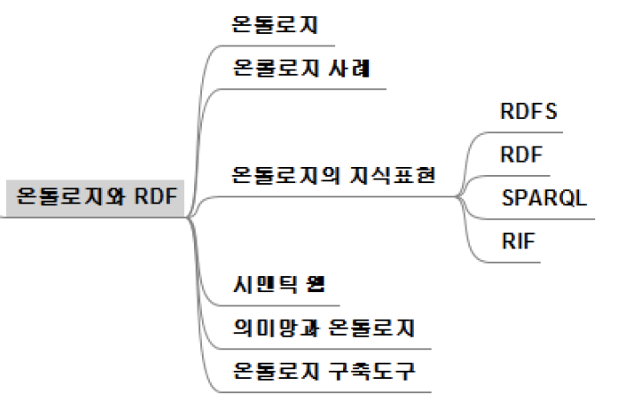

15th
시험범위
이번주까지 진도
온톨로지 (ontology)

철학에서 존재론을 가리키는 말
어떤 영역의 지식을 공유하고 재사용 할 수 있도록 해당 영역의 개념과 관계를 나타내는 어휘를 정의하고 이를 이용해 지식을 표현해 놓은 것
영역(domain)에 있는 개념, 개념에 대한 특성 및 속성, 이들 특성과 속성에 대한 제약요건, 영역에 있는 일부 개체에 대한 정보가 기술
영역에 대한 공통된 어휘(vocabulary) 사용
영역에 대한 공통된 이해 지원
서로간 토의를 통해 합의를 이룬 것을 표현
컴퓨터에서 다룰 수 있는 형태로 정형화하여 표현
사례


온톨로지의 지식표현
의미망과 비슷하게 방향성이 있는 그래프로 표현 가능
RDF (Resource Description Framework)
자원에 대한 메타데이터(metadata, 데이터에 대한 데이터)를 기술하는 명세(specification)
특정 대상을 기술하는 간단한 문장 (sentence)
- 주어 (subject) + 서술어 (predicate) + 목적어 (object)로 파악
- 자원 (대상, resource) - 속성 (특징, 주어와 목적어 관계, attribute) - 값 (value)로 분해


RDFS (Resource Description Framework Schema, RDF schema)
RDF를 사용하여 온톨로지를 표현할 때 사용할 관련 어휘 온톨로지를 정의하는 언어


SPARQL
RDF 형태로 저장된 데이터에 대한 질의어
SQL과 유사한 문법

RIF (Rule Interchange Format)
규칙을 정의하고 교환하기 위한 규약

WOL (Web Ontology Language)
웹 상의 자원과 이들의 속성에 대한 지식을 표현하기 위한 온톨로지 언어

온톨로지의 활용
시맨틱 웹 (semantic web)
웹의 데이터를 소프트웨어 에이전트가 이해하여 지능적으로 활용할 수 있도록 하는 것
웹을 처음 설계한 Tim Bernes-Lee가 주창한 아이디어
의미있는 태그(tag)를 정의하여 문서를 기술하기 위해 XML 사용
태그 및 데이터의 의미해석을 위해 RDF 사용
온톨로지 구축을 통해 태그 및 메타 데이터의 의미 해석

의미망과 온톨로지
그래프 구조를 이용한 지식 모델링
의미망
대상, 관계 등의 표현에 사용되는 용어가 임의적
통일된 표현 관련 규정 부재
온톨로지
다른 시스템과 공유와 상호운영성 (interoperability)를 위해 명확한 지침에 따라 표현
구축된 정보 및 지식의 재사용에 관심
온톨로지 구축 도구
Pretege 등
지식 획득 및 표현을 위한 GUI 기반의 오픈소스 온톨로지 편집기